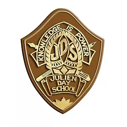

Hi, My name is Moumish
and I am a passionate

Academic Journey

Julien Day School (2008 – 2018)
Completed my schooling from Kindergarten to Class 10 under the ICSE Board. Built a strong academic foundation and developed essential skills in communication, discipline, and teamwork.
Kalyani Central Model School (2018 – 2020)
Completed my higher secondary education (Class 11 and 12) in the Science stream under the CBSE Board, building a strong understanding of core subjects and analytical skills.
Narula Institute of Technology (2020 – 2024)
I completed my Bachelor of Technology (B.Tech) in Electronics and Communication Engineering (ECE).During this period, I gained a strong foundation in core ECE subjects, along with practical exposure to projects and hands-on learning.